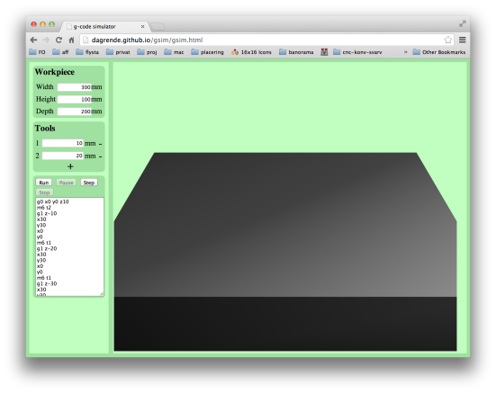

Simulates a milling machine running g-code. You can specify a workpiece size, a number of end-mills of varous diameter and the g-code. Then run or single-step the g-code instructions and see the mill digging into the piece.
Rotate the workpiece with the left mouse button (three-fingers on Mac) and zoom with the mouse-wheel (two-fingers on Mac).
The window should look like this:
If it doesn't, try using another browser, like Chrome or Firefox.
Gsim is open-source under GPL version 3 at https://github.com/dagrende/gsim